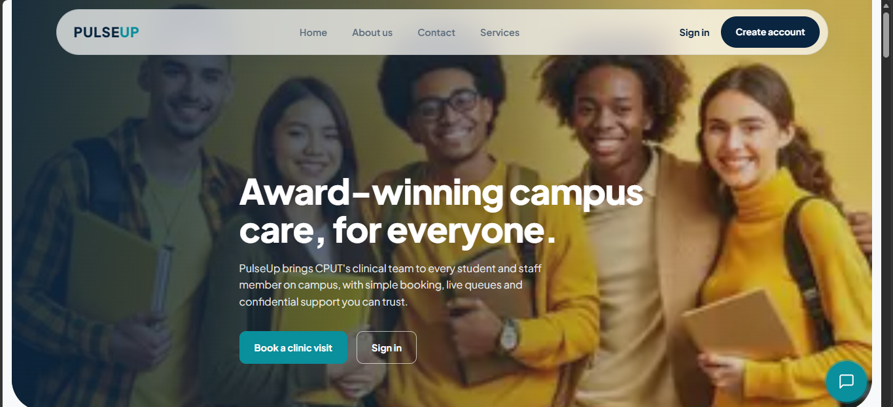
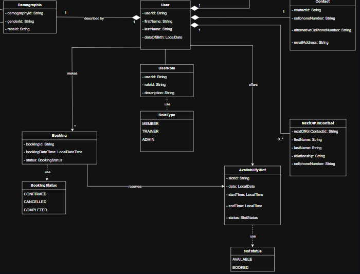
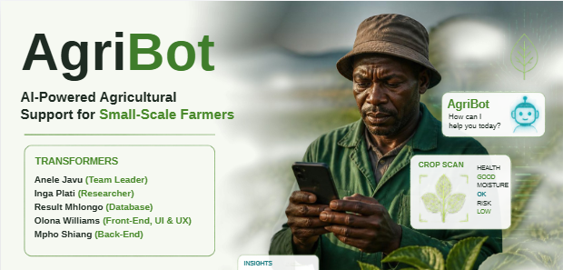
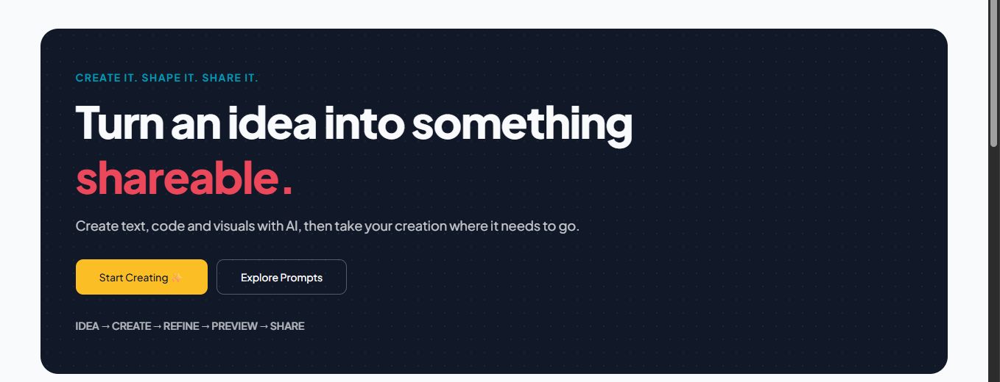
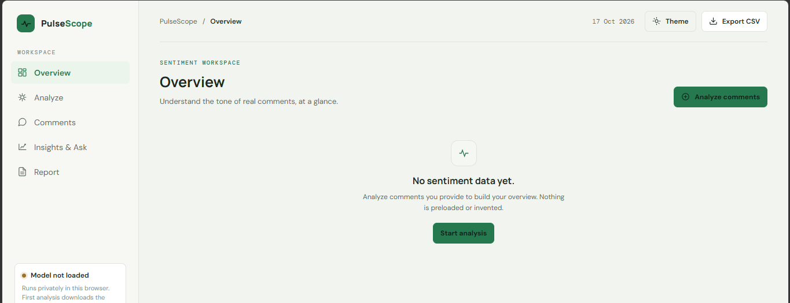
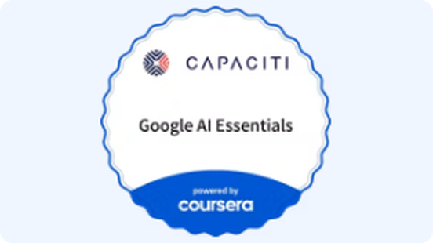
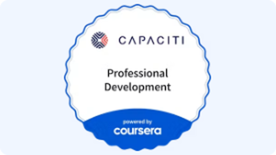
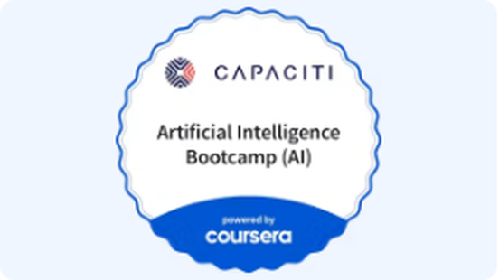

CPUT group project, 2026
PulseUp
A clinic booking platform for CPUT students. Students book appointments, earn health points for attending, and exchange points for food vouchers.

I turn ideas into working software, from the database to the screen.
Third-year ICT student at CPUT and Digital Associate in the CAPACITI Data Academy.
Currently at CAPACITI
Drag the stickers
I'm studying for a Diploma in ICT: Applications Development at the Cape Peninsula University of Technology in Cape Town. So far I've built a client-server enrolment system in Java, a thrift-store website with PHP and MySQL, and a clinic booking platform with React and a Spring Boot backend.
Since September I'm also in CAPACITI's 12-month Data Academy, where I'm learning to build with AI and data. I like work that has a real user at the end of it, I learn fast, and I'm happy working alone or in a team.
September 2026 to present
CAPACITI
A 12-month programme. I'm building AI and data projects in teams: a chatbot, a content generator, a sentiment analysis workspace and an AI solution. You can see them under Projects.
2024 to present
Cape Peninsula University of Technology, Cape Town
Java, JavaScript, HTML and CSS, SQL and PHP; database design with ER modelling; UI and UX design in Figma; client-server and socket programming.
November 2024 to December 2025
The Fix (TFG), Wellington

2022
Desmond Mpilo Tutu High School, Western Cape Education Department
Two projects from my degree and four from the CAPACITI Data Academy.
CPUT group project, 2026
A clinic booking platform for CPUT students. Students book appointments, earn health points for attending, and exchange points for food vouchers.

CPUT project
A fitness management system for a single gym. Trainers publish their available time slots, members book them, and the system stops double bookings and overlapping sessions. Its UML diagram models users, accounts, bookings and availability slots.

CAPACITI chatbot, team of five (I was the researcher)
An AI chat assistant for small farmers. Ask a farming question, send a photo of a crop for a diagnosis, or get a 14-day forecast of how it will grow. It works in 11 South African languages, and it keeps working when the connection drops by caching recent answers.

CAPACITI content generator
A content generator for creating text, code and visuals with AI, then taking the result where it needs to go. It has a prompt library, plus pages for your creations, saved items and history.

CAPACITI sentiment analysis
A sentiment analysis workspace that shows the tone of real comments at a glance. You add the comments, analyse them, browse the results, ask questions in Insights, and export a report or a CSV. The model runs privately in your browser, and nothing is preloaded or invented.

CAPACITI AI solution, team project
A civic-services prototype where residents report broken public infrastructure with a photo. An AI model that runs in the browser suggests the category and the department, the resident confirms or changes it, and staff can track the report. It also checks for nearby duplicate reports and shows how often the AI's suggestions were accepted.
Learning paths completed through CAPACITI, powered by Coursera.

Google AI Essentials
Professional Development
Artificial Intelligence BootcampBuilding PulseUp's sign-in taught me the difference between not knowing who you are (401) and knowing you but saying no (403). Checks in the browser only help the user. The server has to repeat every one of them.
I fixed compile errors, set environment variables, generated a secret key, and traced blocked requests to a dev server that had moved to another port. Now I write down how to run a project as I go.
CivicFix lets the resident confirm or change the AI's suggestion instead of trusting it blindly. That is the kind of software I want to build: useful, and clear about what it is unsure of.
Pick whichever suits you. Each link opens the app and goes straight to me.